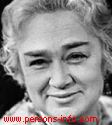

Шапошникова Людмила Викторовна
С сайтов http://mega.km.ru и http://www.persons-info.com

Шапошникова Людмила Викторовна (р. 13.08.1921), актриса. Народная артистка СССР (1991). С 1944 в театре им. Моссовета.По окончании в 1944 г. ГИТИСа (курс И. М. Раевского) в Театре им. Моссовета; в 1944 г. работала во фронтовой театральной бригаде. Среди ролей: Агния, Сусанна ("Не все коту масленица","Красавец мужчина" А.Н.Островского),Соня,Елена Андреевна ("Леший" А.П.Чехова), Редактор ("Шторм" В.Н.Билль-Белоцерковского), Гонерилья("Король Лир" У.Шекспира), Нина Алексеевна ("Ленинградский проспект" И.В.Штока), Танкабике ("В ночь лунного затмения" М.Карима), миссис Сэвидж ("Странная миссис Сэвидж" Дж.Патрика), Арлен ("Двери хлопают" М.Фермо), Лисистрата ("Бунт женщин" Н.Хикмета), Татьяна Петровна ("Бранденбургские ворота" М.А.Светлова), фру Линне ("Нора" по "Кукольному дому" Г. Ибсена), Ольга Федоровна ("Миллион за улыбку" А.В.Софронова), Мушкате ("Лилиом" Ф.Мольнара), Олимпиада ("День приезда - день отъезда" В.К.Черных), Екатерина II, Живцова ("Царская охота", "Цитата" Л.Г.Зорина), Мелания ("Егор Булычов и другие" М.Горького), леди Брэкнелл ("Как важно быть серьезным" О.Уайльда), Этель Тэйер ("На Золотом озере" Э.Томпсона), Кончетта Меле ("Утешитель вдов" Д.Маротты и Б.Рандоне) и др.
Кинофильмы:
1967 КОНЕЦ «САТУРНА»
1967 ПУТЬ В «САТУРН»
1970 ПОЕЗД В ЗАВТРАШНИЙ ДЕНЬ
1972 БОЙ ПОСЛЕ ПОБЕДЫ. . .
1979 ПО ДАННЫМ УГОЛОВНОГО РОЗЫСКА. . .
1981 БЕЗОБРАЗНАЯ ЭЛЬЗА
1988 ЦИТАТА